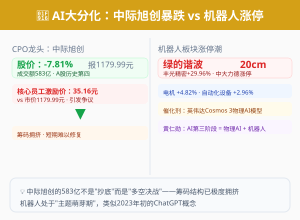

01
A股
指数跌、多数股涨——A股内部正在"换血"
上证指数收报4027.74点，跌0.74%（-30.04点）；深成指收15314.70点，跌2.21%；创业板指重挫3.20%收报3957.94点，失守4000点大关。但全市场超3200只个股上涨、84只涨停——指数大跌的背后，是权重大幅杀跌拖累。
两市成交3.07万亿元，较周四放量约3200亿，属于放量下跌。北向资金净流出约80亿元，主要减持科技权重股。
两大极端现象：
1 北证50暴涨5.59%——盘中一度涨超7%，成份股戈碧迦、同惠电子等涨超10%。北交所长期低迷后的低位爆发
2 中际旭创成交583亿——A股历史第四天量，股价大跌7.81%报1179.99元，核心员工激励价仅35.16元引发市场争议
领涨板块：电机、机器人（绿的谐波20cm涨停、丰光精密29.96%涨停）、自动化设备、减速器、金属新材料。
领跌板块：CPO（中际旭创领跌）、半导体、电力、贵金属、存储芯片。
逻辑链
非农预期压制科技权重 → 创业板/半导体/CPO等指数权重暴跌 → 创业板重挫3.2% → 但存量资金并未离场 → 涌入北交所/机器人/电机等低位方向 → 形成"指数跌、多数涨"的奇特格局
